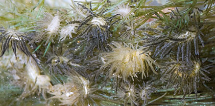
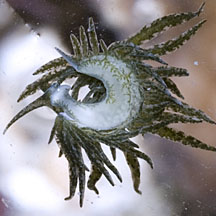
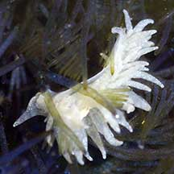

|
|
| sea slugs text index | photo index |
| Phylum Mollusca > Class Gastropoda > sea slugs > Order Sacoglossa |
| Bryopsis
slug Placida sp.* Family Limapontiidae updated Jun 2020 Where seen? This superbly camouflaged slug is actually quite common on many of our shores, particularly when there is a bloom of Bryopsis seaweeds. At this time, lots of them can be seen even in a small clump of seaweed. But they are really hard to spot. Features: Tiny, to about 1cm. Long, soft body with lots of finger-like projections (cerata) that are transparent. The digestive system extends into the cerata, and the green stuff is the seaweed 'juices' sucked up by the slug. Some have a white stripe along the upperside of the body. There is also a pattern of little lines on the sides of the body. Pale narrow foot. One pair of long rhinophores, no oral tentacles. The egg mass is coiled, sausage-shaped mass and very sticky. Two species are recorded for Singapore: Placida daguilarensis and Placida dendritica |
 Sometimes seen in large numbers. Sisters Island, May 12 |
 Sentosa, Nov 03 |
|
 Sometimes seen floating upside down on the water surface. Sisters Island, May 12 |
 Tiny white one, perhaps it hasn't eaten enough seaweed yet? Sentosa, Aug 04 |
*Species are difficult to positively identify without close examination.
On this website, they are grouped by external features for convenience of display.
| Bryopsis slugs on Singapore shores |
On wildsingapore
flickr
|
| Other sightings on Singapore shores |
Links
References
|